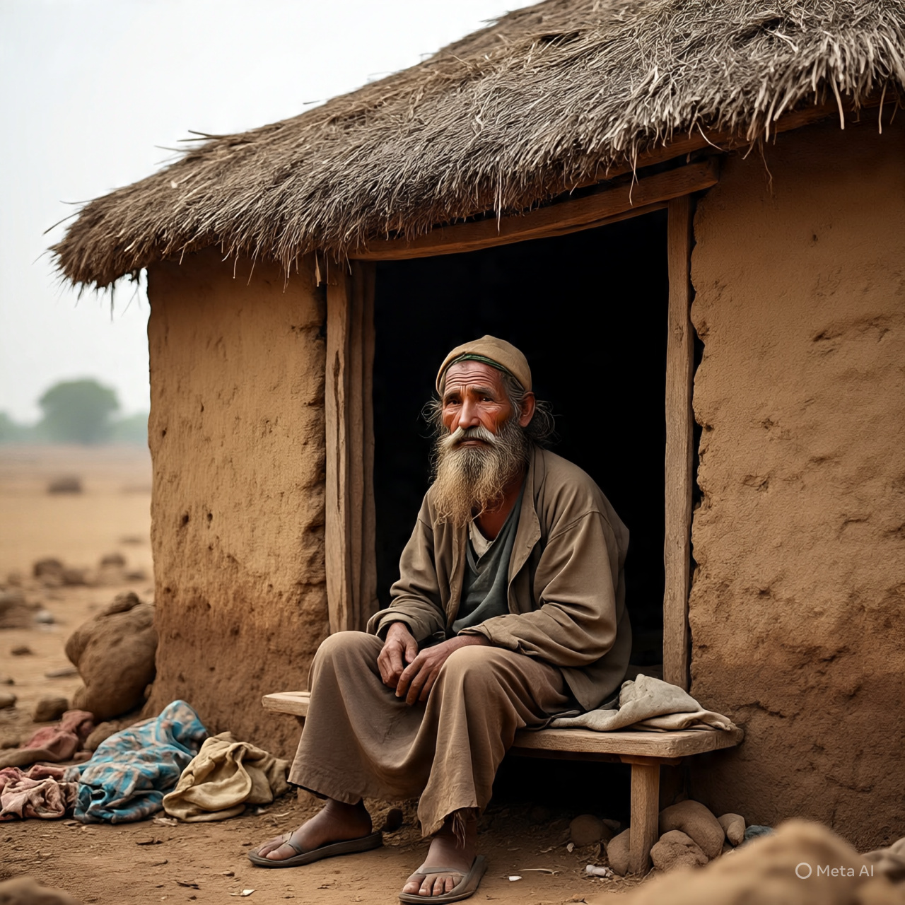

-
At first I thought it was love.
Then you started acting strangely.
Right now we are only strangers.
I blame myself for trusting you. 💔

At first I thought it was love.
Then you started acting strangely.
Right now we are only strangers.
I blame myself for trusting you. 💔